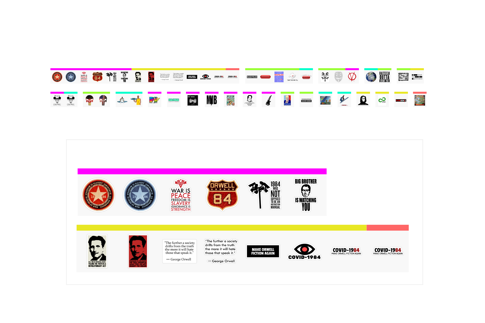
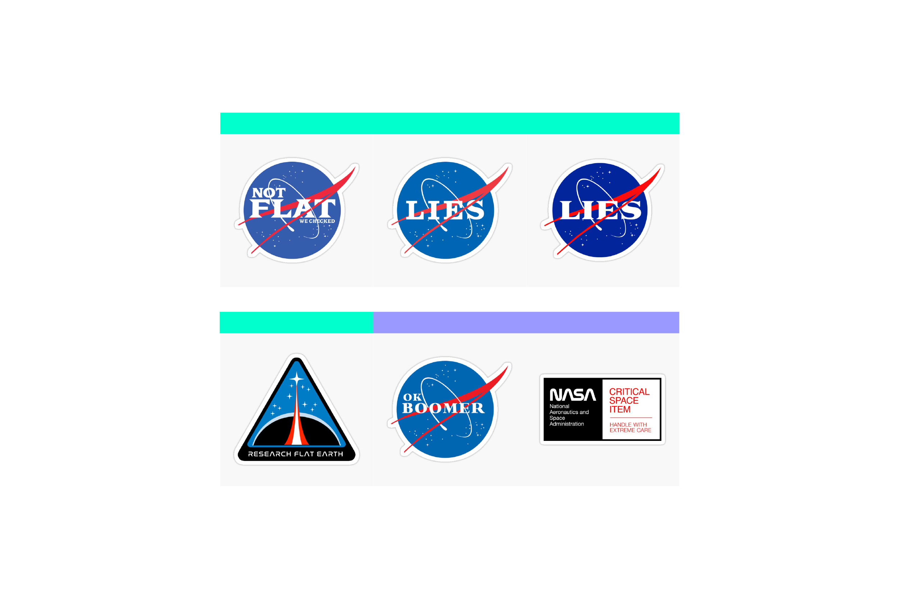
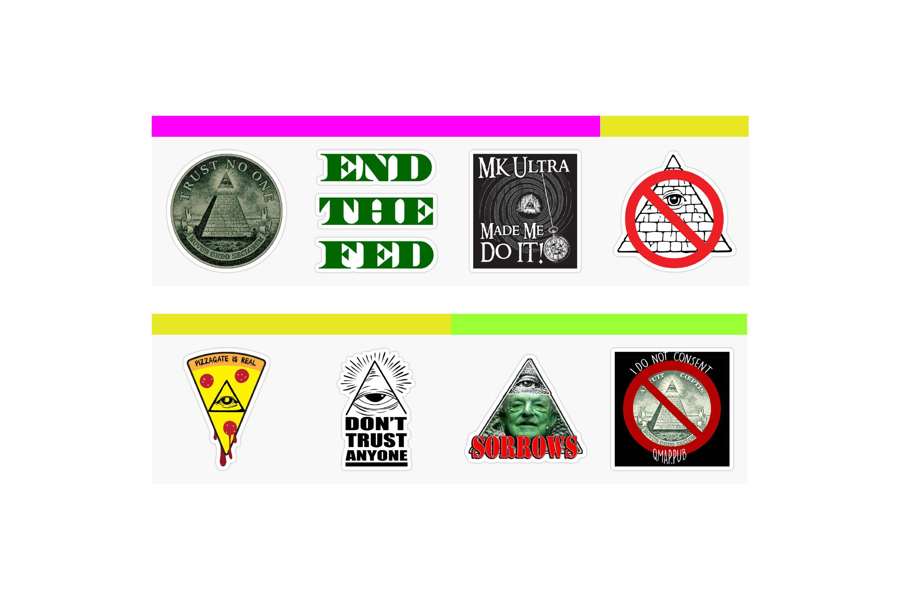
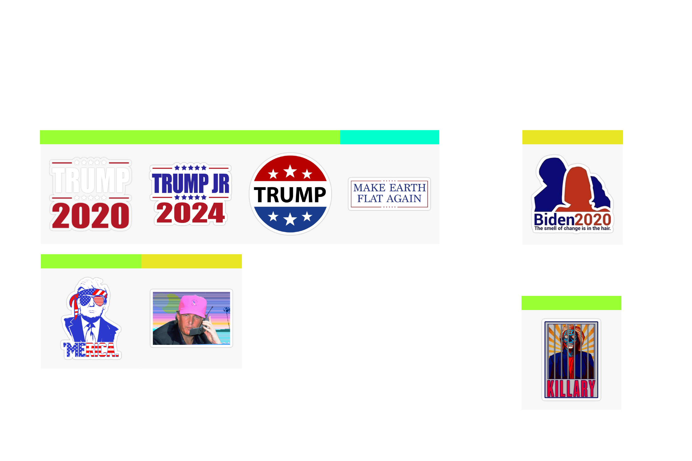
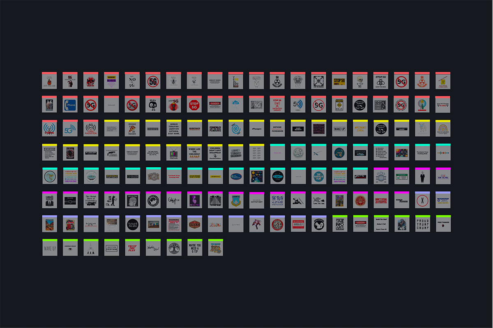

Conspiracy theories often communicate by using mass culture references such as movies, books, political issues, memes, etc; visual languages and imagery taken from various sources are reinterpreted in order to convey
different messages.
We investigated this phenomenon by analyzing the e-commerce platform RedBubble, and especially in the “Stickers” section of the website, by searching using different queries related to popular conspiracy theories.
We selected the top-50 best selling results for each query and grouped them into categories, in order to have an overview of the references and to spot the most recurrent ones.
The majority of the references on stickers are linked to the field of Entertainment, including slogans and images taken from dystopian or sci-fi movies and books: The Matrix, V for Vendetta, Men In Black etc. George Orwell’s 1984 is the most recurrent reference, and it’s often adapted to mention relevant topics such as the Coronavirus pandemic, for example in the “COVID-1984” stickers. The queries that generated this reference are “mk ultra”, “pizzagate” and “5g”.
Some stickers contain references to logos and trademarks of existing companies, which are edited to convey new messages. An interesting example is that of NASA, which is very recurrent and very recognizable (in most cases the text is the only difference from the original version). This reference is used to communicate different messages, from accusations to NASA (“LIES”) to slogans against flat earthers (“NOT FLAT”).
In the Government&Politics section there are many references to the pyramid eye, a symbol related to US “One Dollar” banknotes which is commonly spread among different conspiracy theories (“mk ultra”, “pizzagate” and “qanon”). It’s also interesting how in one case the text of the sticker recalls just the font and the color from the banknotes.
In the Governments&Politics section there are many references to Donald Trump (either his figure or his political campaign MAGA) and some of his political opponents (Hillary Clinton and Joe Biden), most of which are related to the queries “qanon” and “pizzagate”.
In the Cult&Beliefs section the query “flat earth” generated references to religious content (such as the Bible and the YinYang sign), which is reused to represent the Flat Earth model.
Almost a half of the stickers don’t contain any reference to mass culture, and they mostly consist in slogans and stock illustrations. A very common example is the sign of prohibition, very recurrent when using the query “5g”, which is the one that generated most results of stickers without references.
Overall there aren’t fixed correlations between queries and categories, even though some themes are more recurrent when using specific queries. For example “qanon” and “pizzagate” generated more references to politics and movies, “flat earth” is more linked to NASA and the moon landing, while aliens and UFOs are the most common results when searching for “area 51” (that’s the reason why this query is particularly present in the Cult&Beliefs section).